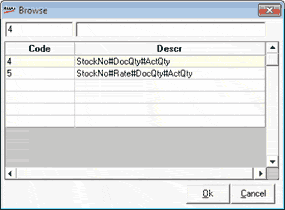

PDT File Format Selection
The Browse window is as shown.

Select the required format code by clicking on the row or alternatively type the code and click Ok.
Ok: To select the file format and close the Browse window
Cancel: To close the Browse window without selecting any file format